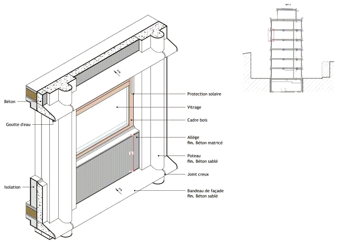
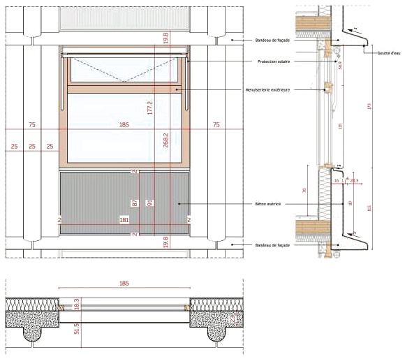
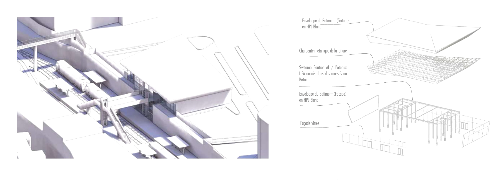
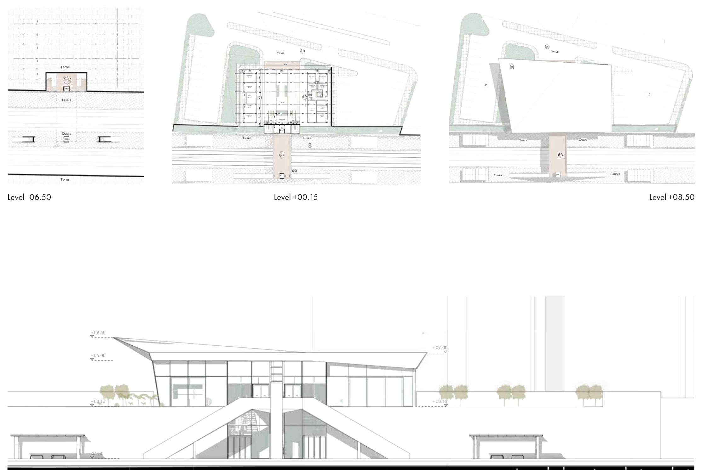
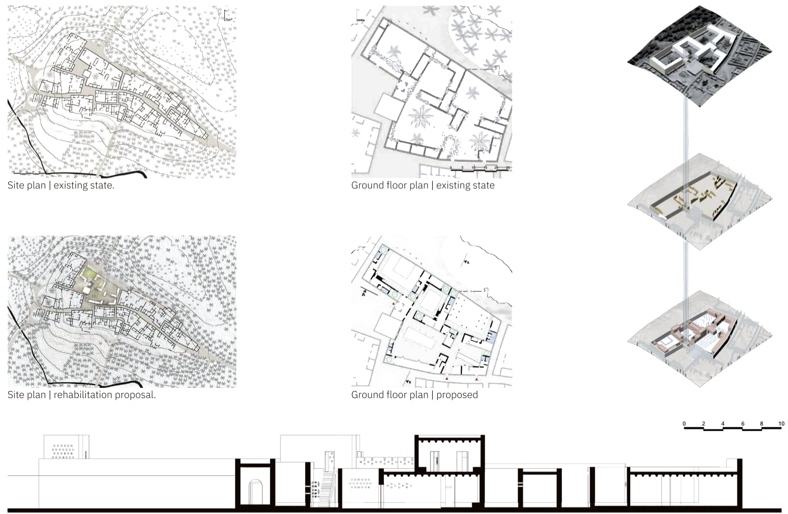
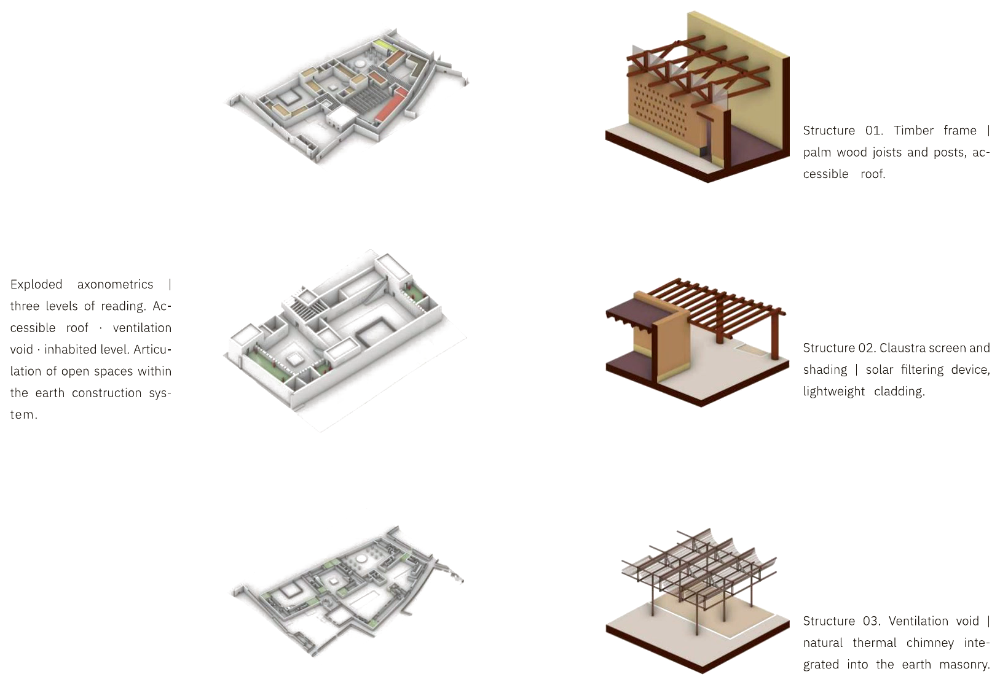

Bolivar Rehabilitation | hotel and student residenceParis 19th | 2026Studio BELEMRender: Studio BELEM View project
Belhomme Rehabilitation | residential and commercialParis 18th | 2025-2026Studio BELEMRender: Studio BELEM View project
La Villette Rehabilitation | PRO/DCE drawingsParis 19th | 2025-2026Studio BELEMRender: Studio BELEM  View project
Zenata Station Infrastructure | regional rail stationCasablanca | 2025Yassir Khalil Studio View project
Nouvelle Medina Station Infrastructure | urban train stationCasablanca | 2025Yassir Khalil Studio  View project
Aïn Sebaâ Station Infrastructure | train station, competitionCasablanca | 2025Yassir Khalil Studio View project
Hay Mohammadi Station Infrastructure | rapid transit stationCasablanca | 2025Yassir Khalil Studio View project
Villa Papillon Residential | contemporary villaMarrakech, Palmeraie | 2024Yassir Khalil Studio View project
Tamansourt Campus Healthcare | hospital and wellness campusTamansourt | 2024Yassir Khalil Studio View project
Al-Arg Heritage conservation | rehabilitationHammat Djérid, Tunisia | 2023-2024  View project